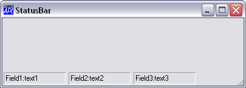

| Parents | Children | Properties | Methods | Events |
| Purpose: | This object is used to manage StatusField objects which display information for the user. |
Description
The StatusBar is a container object that manages StatusFields. StatusField objects display textual information and are typically used for help messages and for monitoring the status of an application. They can also be used to automatically report the status of the Caps Lock, Num Lock , Scroll Lock, and Insert keys.
'TEST'⎕WC'Form' 'StatusBar' ('EdgeStyle' 'Default')
'TEST.SB'⎕WC'StatusBar'
'TEST.SB.S1'⎕WC'StatusField' 'Field1:' 'text1'
'TEST.SB.S2'⎕WC'StatusField' 'Field2:' 'text2'
'TEST.SB.S3'⎕WC'StatusField' 'Field3:' 'text3'

The Align property determines to which side of the parent Form or SubForm the StatusBar is attached. By default, a StatusBar is positioned along the lower edge of the Form (Align'Bottom') and is 24 pixels high. Using the Align, Posn and Size properties you may create StatusBars in different positions and with differing sizes if you wish. Notice that the Align property controls how the StatusBar reacts to its parent Form being resized. If Align is 'Top' or Bottom, the StatusBar remains fixed in height but stretches and shrinks sideways with the Form. If Align is 'Left' or 'Right', the StatusBar remains fixed in width and stretches and shrinks vertically with the Form.
By default a StatusBar has a Button Face colour background and the value of its EdgeStyle property is 'Default'. This gives it the appearance shown above.
Unless you specify the position and size of its children, a StatusBar automatically manages their geometry. The first StatusField is positioned just inside its top left corner. If Align is 'Top' or 'Bottom', the next StatusField is positioned alongside the first but with a small gap between them. Subsequent StatusFields are added in a similar fashion. If Align is 'Left' or 'Right', the second and subsequent StatusFields are added below the first with a similar gap between them. In either case you can position and size the StatusFields explicitly if you wish.
If you attempt to add a StatusField that would extend beyond the right edge (Align'Top' or 'Bottom') or bottom edge (Align'Left' or 'Right') the behaviour depends upon the value of HScroll or VScroll. If HScroll is 0 (the default) and Align is 'Top' or 'Bottom', the StatusField is added below the first one, thereby starting a new row. If VScroll is 0 (the default) and Align is 'Left' or 'Right', it is added to the right of the first one thereby starting a new column. If HScroll or VScroll is ¯1 or ¯2, the new StatusField is simply positioned in the same row or column and may be scrolled into view using a mini scrollbar. A value for HScroll or VScroll of ¯1 causes the mini scrollbar to be permanently present in the Scroll Bar. A value of ¯2 causes it to appear only when required.
VScroll and HScroll may only be set when the object is created and may not subsequently be changed.